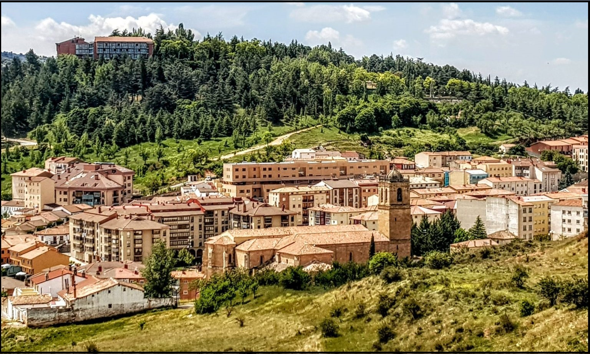
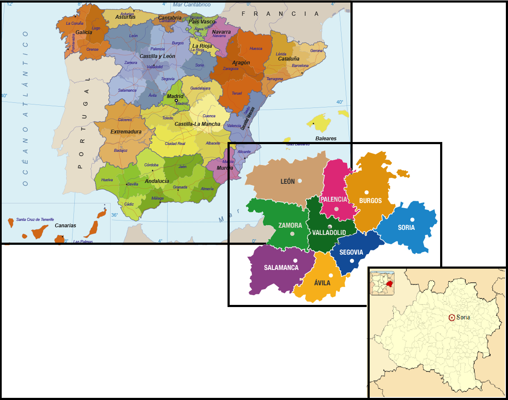
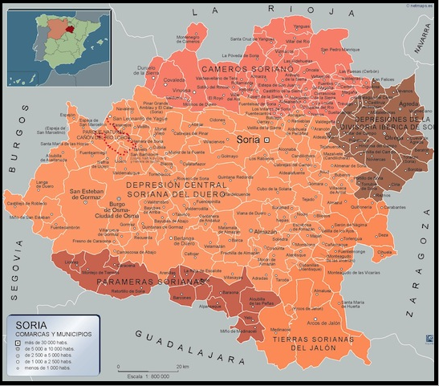

PROVINCIAS |
Localización Geografía Localidades Principales Historia Cultura Naturaleza Tradiciones Otros |
|---|---|
| Wikipedia Ávila Wikipedia Burgos Wikipedia León Wikipedia Palencia Wikipedia Salamanca Wikipedia Segovia Wikipedia Valladolid Wikipedia Zamora |

Ir arriba Localización de Soria La provincia de Soria se encuentra en España, pertenece a la comunidad de Castilla y León. Ir arriba Geografía de SoriaIr arriba Localidades Principales de SoriaCitaremos algunas de las ciudades más representativas de cada comarca:
Ir arriba Historia de SoriaIr arriba Cultura de SoriaIncluyo un enlace a la página del ayuntamiento de Soria para poder ver la guia de Cultura y Ocio disponible. Guía de Cultura y Ocio de SoriaIr arriba Naturaleza de SoriaVídeo de la Dipitación de Soria Ir arriba Tradiciones de SoriaIr arriba Otras cosas de SoriaDejo en el enlace a varias pág. de interés sobre el turismo en Soria, donde incluyen restaurantes, hoteles, rutas, etc. Ir arriba |